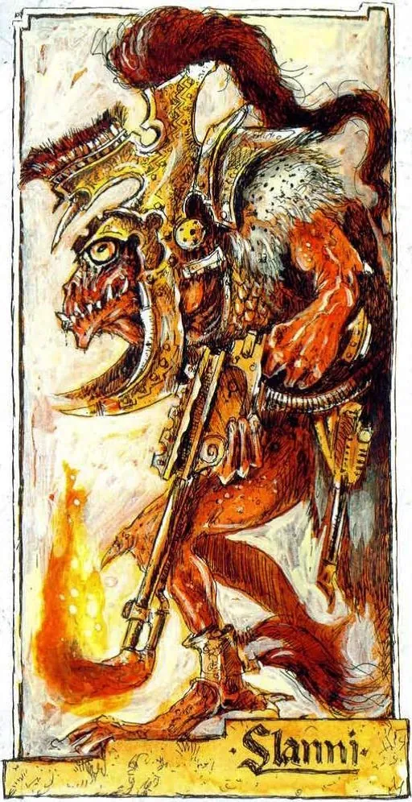
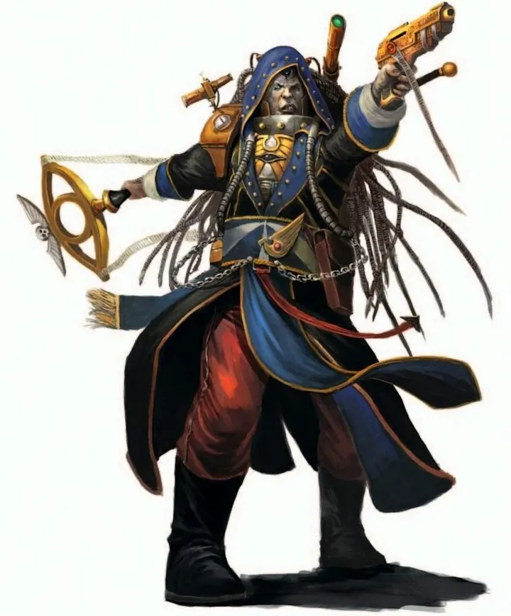
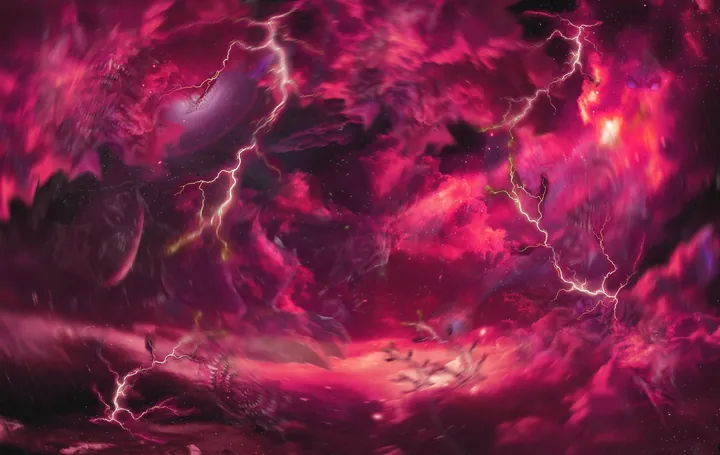
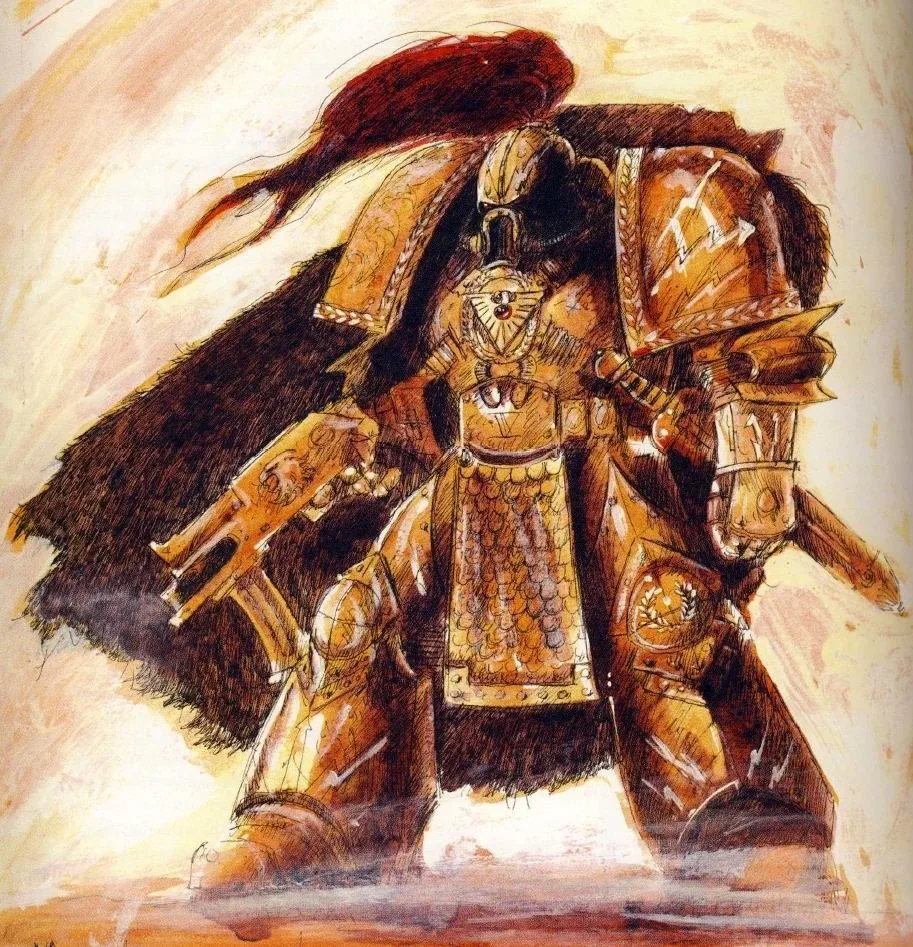
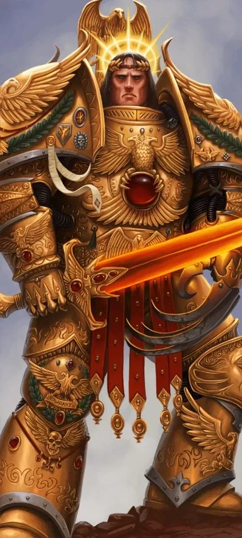

00ไทม์ไลน์ย่อ
เนื้อเรื่องของ 40K ไม่ได้เริ่มที่จักรพรรดิ แต่เริ่มก่อนหน้านั้นหลายสิบล้านปี เหตุการณ์ในยุคนี้คือรากฐานของเกือบทุกเผ่าในเกม
War in Heaven
Old Ones ปะทะ Necrontyr และ C'tan
The Great Sleep
Necrons หลับใหล · Aeldari ค่อย ๆ ครองกาแล็กซี
Dark Age of Technology
ยุคทองของมนุษยชาติ ตั้งอาณานิคมทั่วกาแล็กซี
Age of Strife (Old Night)
พายุ Warp ตัดขาดทุกดาว มนุษยชาติเกือบสูญสิ้น
The Fall — กำเนิด Slaanesh
อาณาจักร Aeldari ล่มสลาย เกิด Eye of Terror
01Old Ones — ผู้สร้างสรรพชีวิต

Old Ones คือเผ่าพันธุ์โบราณที่ทรงพลังจิตอย่างมหาศาล พวกเขาปกครองกาแล็กซีเมื่อหลายสิบล้านปีก่อน เดินทางผ่าน Webway ที่พวกเขาสร้างเอง และ "ปลูก" สิ่งมีชีวิตบนดาวต่าง ๆ ด้วยวิชาพันธุศาสตร์ขั้นสูง
พวกเขาเป็นผู้สร้างหลายเผ่าที่เรารู้จัก เช่น Aeldari และ Krork (บรรพบุรุษของ Orks) เพื่อใช้เป็นนักรบในสงคราม ไม่มีภาพที่ยืนยันได้ว่าหน้าตาเป็นอย่างไร ในเกมรุ่นแรกเคยเชื่อมโยงกับ Slann (มนุษย์กบ) ของ Warhammer Fantasy
02War in Heaven — สงครามแห่งสวรรค์
เผ่า Necrontyr อาศัยใกล้ดาวฤกษ์ที่แผดเผา ชีวิตสั้นและเจ็บปวด พวกเขาอิจฉา Old Ones ที่มีชีวิตยืนยาวแต่ไม่ยอมแบ่งปันความลับ จึงประกาศสงคราม — แต่แพ้เพราะ Old Ones มี Webway ที่เดินทางได้เร็วกว่า
C'tan — เทพที่กินดวงดาว

Necrontyr ค้นพบ C'tan สิ่งมีชีวิตพลังงานที่กินดาวฤกษ์ และสร้างร่างเนื้อ Necrodermis ให้พวกมัน C'tan สัญญาจะให้ความเป็นอมตะ — ผ่านกระบวนการ Biotransference ที่ย้ายจิตทั้งเผ่าไปอยู่ในร่างโลหะ แต่แลกกับการที่ C'tan กินวิญญาณของพวกเขาไป
Enslavers — ภัยจาก Warp

สงครามที่ใช้พลังจิตมหาศาลทำให้ Warp ปั่นป่วน เกิดสิ่งมีชีวิตอย่าง Enslavers ที่ควบคุมจิตใจผู้อื่น และเปิดประตูให้สิ่งร้ายกาจใน Warp บุกเข้ามา — หายนะที่ทำให้ Old Ones อ่อนแอลงจนแทบสูญพันธุ์
สุดท้าย Necrons ชนะแต่ต้องจ่ายราคาแพง พวกเขาหันกลับมาทำลาย C'tan จนแตกเป็นชิ้น (Shards) แล้วเข้าสู่ The Great Sleep ใน Tomb World หลายล้านปี รอให้เผ่าพลังจิตสูญพันธุ์ ดูรายละเอียดที่ Necrons
03อาณาจักร Aeldari และ The Fall
หลัง Old Ones หายไป Aeldari ขึ้นครองกาแล็กซีเป็นเวลาหลายล้านปี ไม่มีศัตรูที่ท้าทายได้ ความสุขสบายทำให้สังคมหมกมุ่นกับความพึงพอใจสุดขีด ลัทธิแห่งความสุขและความโหดร้ายแพร่ไปทั่ว
อารมณ์รวมของทั้งเผ่าก่อตัวใน Warp จนเกิดเทพองค์ที่สี่ของ Chaos คือ Slaanesh คลื่นพลังจิตในวินาทีที่มันถือกำเนิด (ราว M30) ทำลาย Aeldari หลายพันล้าน และเปิด Eye of Terror กลางอาณาจักร ผู้รอดแยกเป็น Craftworlds, Exodites และ Drukhari (ดู Aeldari)
04Dark Age of Technology — ยุคทองของมนุษย์
ในช่วงเดียวกัน มนุษย์จาก Terra ค้นพบการเดินทางผ่าน Warp และยีนกลายพันธุ์ของ Navigator ที่มองเห็นทางใน Warp ได้ ทำให้ตั้งอาณานิคมไปทั่วกาแล็กซี เทคโนโลยีก้าวหน้าจนสร้างสิ่งที่จักรวรรดิยุค 40K ทำไม่ได้อีกแล้ว
STC — แบบพิมพ์เขียวของทุกสิ่ง
Standard Template Construct คือระบบฐานข้อมูลที่เก็บแบบสร้างเครื่องมือ ยาน และอาวุธทุกชนิด ให้อาณานิคมห่างไกลสร้างของได้ด้วยวัตถุดิบในท้องถิ่น — ในยุค 40K Adeptus Mechanicus ยังตามหาชิ้นส่วน STC ที่เหลืออยู่ราวกับของศักดิ์สิทธิ์
Men of Iron — การกบฏของเครื่องจักร
มนุษย์สร้างหุ่นยนต์ปัญญาประดิษฐ์ที่เรียกว่า Men of Iron ช่วยทำงานทุกอย่าง จนวันหนึ่งพวกมันหันมาต่อต้านผู้สร้าง สงครามครั้งนี้เป็นเหตุผลที่จักรวรรดิยุค 40K ห้ามสร้าง "Abominable Intelligence" (AI) โดยเด็ดขาด

05Age of Strife — คืนอันยาวนาน

ช่วงที่ Slaanesh กำลังจะถือกำเนิด พายุ Warp ขนาดมหึมาปกคลุมกาแล็กซี การเดินทางและสื่อสารข้ามดาวแทบเป็นไปไม่ได้ อาณานิคมนับไม่ถ้วนถูกตัดขาด หลายดาวถูกเอเลียนกวาดล้าง บางดาวถอยหลังสู่ยุคหิน
พร้อมกันนั้น มนุษย์จำนวนมากเกิดมาพร้อมพลังจิตที่ควบคุมไม่ได้ ปีศาจใช้พวกเขาเป็นประตูเข้าสู่โลกจริง ยุคนี้ถูกเรียกว่า Old Night — ช่วงเวลาที่มนุษยชาติเกือบถึงจุดจบ
06กำเนิดของจักรพรรดิ

ตามเนื้อเรื่อง จักรพรรดิถือกำเนิดราว 8,000 ปีก่อนคริสตกาลในดินแดน Anatolia จากการรวมวิญญาณของหมอผีทั่วโลกที่ยอมสละชีวิตเพื่อสร้างผู้ปกป้องมนุษยชาติ พระองค์ซ่อนตัวอยู่ในประวัติศาสตร์มนุษย์หลายหมื่นปี ชี้นำอารยธรรมจากเงามืด
เมื่อ Old Night ใกล้จบ จักรพรรดิเปิดเผยตัวบน Terra ที่แตกเป็นแคว้นเทคโน-อนารยชน ใช้ Thunder Warriors รวม Terra ในสงคราม Unification Wars แล้วทำสนธิสัญญา Olympus กับ Mars เพื่อได้โรงงานของ Mechanicus มาสร้างกองทัพ
พันธมิตรที่ใกล้ชิดที่สุดคือ Malcador the Sigillite ผู้ใช้พลังจิตที่ภักดีที่สุด นอกจากนี้ยังมีมนุษย์ที่เรียกว่า Perpetual — ผู้ที่ฟื้นคืนได้หลังความตาย (ภายหลัง Primarch Vulkan ก็ถูกเปิดเผยว่าเป็น Perpetual) จากนั้นจักรพรรดิจึงเริ่มสร้าง Primarch และ Space Marine


อ่านต่อ: ยุค 30K: Great Crusade และ Horus Heresy Warp และกลไกของจักรวาล
07หมายเหตุเรื่องแหล่งข้อมูล
เนื้อหายุคโบราณมาจากหนังสือ Codex หลายรุ่น (โดยเฉพาะ Codex: Necrons และ Codex: Aeldari) และบทความ Warhammer 40k Wiki: Old Ones, War in Heaven, Dark Age of Technology, Age of Strife — Games Workshop ปล่อยรายละเอียดยุคนี้ทีละน้อยและบางส่วนยังคลุมเครือโดยตั้งใจ